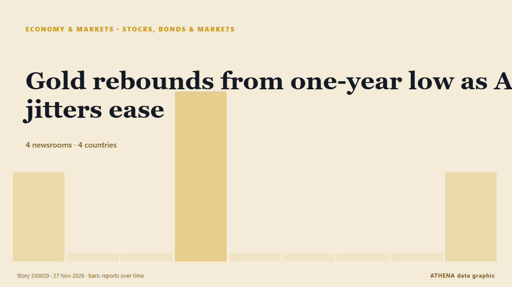

Stocks, bonds & markets
SponsoredPresented by  Cybernetics and Artificial Intelligence Lab Welcome to the Cybernetics and Artificial Intelligence Laboratory, established at the Department of Business Administration of the National and Kapodistrian University of Athens. The lab is headed by Professor Dimitrios Thomakos. The lab aims to do research that can be published in top venues. Our research uses tools and methods of Artificial Intelligence, and lies in the following areas: - Forecasting - Decision making - Cyber security - Finance We are always looking forward to collaborating with exceptional students!
Cybernetics and Artificial Intelligence Lab Welcome to the Cybernetics and Artificial Intelligence Laboratory, established at the Department of Business Administration of the National and Kapodistrian University of Athens. The lab is headed by Professor Dimitrios Thomakos. The lab aims to do research that can be published in top venues. Our research uses tools and methods of Artificial Intelligence, and lies in the following areas: - Forecasting - Decision making - Cyber security - Finance We are always looking forward to collaborating with exceptional students!
| 14 Nov | 0 |
|---|---|
| 15 Nov | 0 |
| 16 Nov | 0 |
| 17 Nov | 0 |
| 18 Nov | 1 |
| 19 Nov | 0 |
| 20 Nov | 1 |
| 21 Nov | 0 |
| 22 Nov | 1 |
| 23 Nov | 1 |
| 24 Nov | 7 |
| 25 Nov | 3 |
| 26 Nov | 2 |
| 27 Nov | 1 |

Gold rebounds from one-year low as AI jitters ease
Gold prices rose Friday, rebounding from a more-than-one-year low touched earlier this week as a US holiday lull calmed AI-driven market jitters and eased selling pressure on bullion. from MyJoyOnline
Nasdaq sinks about 4% as AI rout, fresh Trump tariffs spook Wall St
The main U.S. indexes fell on Wednesday, with the Nasdaq plunging about 4 percent, as a deepening selloff in AI-related stocks and new U.S. tariff proposals hit sentiment amid mounting doubt over… from The Korea Times
PIF secures inaugural S&P ‘A+’ credit rating with stable outlook
RIYADH: Saudi Arabia’s Public Investment Fund has received its first long-term credit rating from S&P Global Ratings, securing an “A+” assessment with a stable outlook, marking another milestone in… from Arab News
Sensex today | Stock Market Highlights: Sensex surges 1,502 points, Nifty reclaims 25,800 as rupee hits eight-month high
Sensex, Nifty, Share Prices Highlights: Benchmark indices rallied nearly 2 per cent on Wednesday as heavyweight buying, strong foreign inflows and easing crude oil prices lifted sentiment, while the… from The Hindu BusinessLine
Compass exit should spur London to beef up its bench
Financial hubs are like football teams, and it’s time for London market to focus on the next generation. from Financial Times - Markets
Nikkei drops nearly 3% amid AI concerns despite Nvidia CEO's return
The Nikkei stock index fell back sharply on Wednesday with investors locking in gains on technology issues that rebounded strongly th. from Mainichi (English)
Netanyahu Welcomes Reported Reinstatement of Nvidia Founder Jensen Huang as CEO
Israeli caretaker Prime Minister Benjamin Netanyahu welcomed Nvidia’s reported decision Monday to reinstate its founder, Jensen Huang, as chief executive officer, despite ongoing investigations into… from Middle East Monitor
Anthropic falls below $83 IPO price in swift reversal after record listing
The stock was last down 6.5% at US$82, extending its retreat from a blockbuster Nov 19 debut. from The Business Times
Charlie Cox, 43, says he was rejected for James Bond as 'too old' before Robert Pattinson, 40, was cast
Daredevil actor Charlie Cox has said he was turned down for the role of James Bond because he was "too old," days after Robert Pattinson, 40, was announced as the next 007. from Gulf News
As Guru Nanak Prakash Purab is celebrated tomorrow, a curious question about dates
Prime Minister Narendra Modi participated in a Shabad Kirtan at Delhi Raj Niwas on the eve of Guru Nanak Dev's birth anniversary. from Times of India